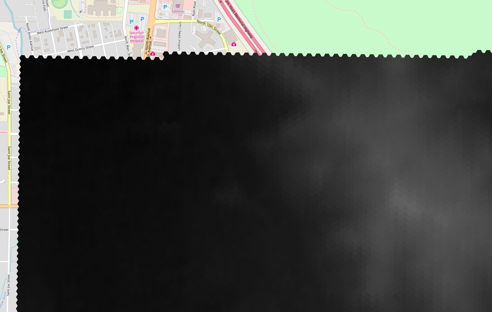

Reimagining rasters
Implementing rasers on the Web considering modern demands.
Since raster implementations are not common things in web mapping, and handling raster data properly is an absolute requirement of a solid Web GIS basis, it was inevitable to dive into raster handling. As the whole implementation was “green field”, we had the opportunity to reimagine the raster model. We all know, we all have been well educated about the various properties of the raster model. It is matrix-based, it is rectangular, it can code one set of attribute data, it can have multiple bands though, it is smaller than vector data, it has a constant resolution on the other hand, etc. But… does it need to have these kind of hard limitation? What we came up with is the coverage model, inspired by the name of OGC’s “raster” standard, the Web Coverage Service. It is kind of an extension of the raster model, making it more general. There has to be a matrix containing attribute values, and there need to be an unequivocal mapping between the matrix and the coverage pattern. That’s it. You can define any single-shape pattern with the coverage model. It can be rectangular, hexagonal, or you can even tile up your screen with Escher geckos.

Fore more information about the perks of the coverage model, you can read our article describing it.